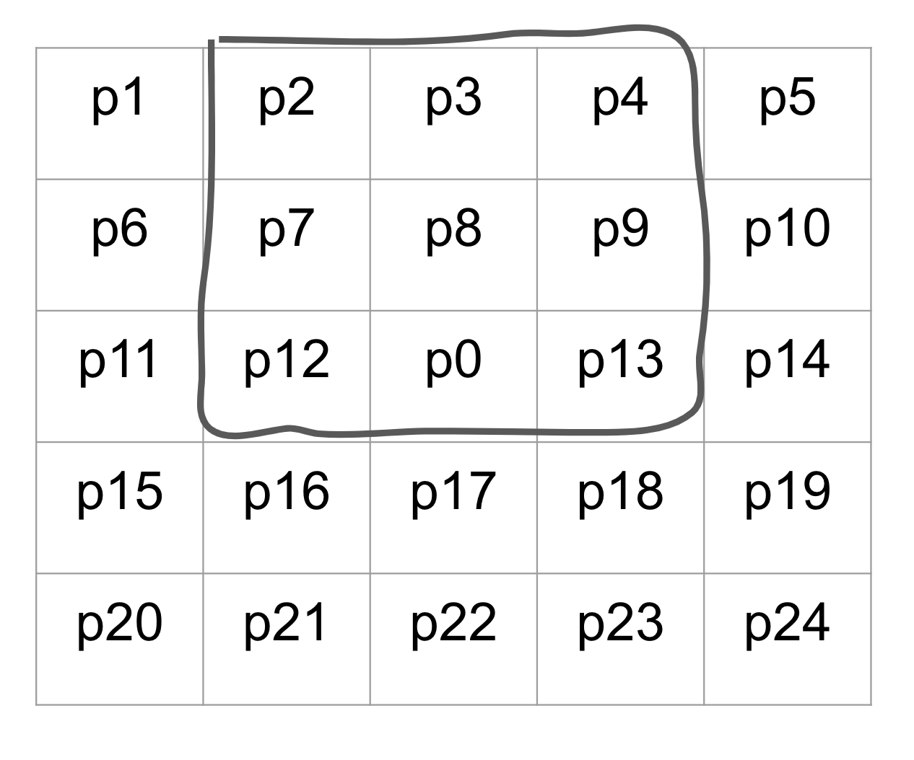

Link to the AAF video
Filters are mathematical or algorithimic expressions applied to images generally on a pixel-by-pixel basis, and they are used for various purposes such as enhancing, modifying, detecting, or extracting certain features like edges.
In our ISP, we will generally use filters through convolution techniques, which involve mapping a kernel of values onto each pixel of an image and applying operations.
We can use this 3x3 average filter being applied to the pixel p7 and this 5x5 section of an image as an example.
When applying filters, you always make a copy of the image first. After that, when the filter is being applied to the pixel p7, the outlined section would be extracted to create a 3x3 matrix. Then, the extracted portion of the image would be multiplied elementwise to the averaging filter. Finally, you would take the sum of all values in the resulting 3x3 matrix, and map that value back on to p7 in the copy of the image, not the original image.
Once p7 has been updated in the copied image, the filter moves on to the next pixel, p8.

The process of applying the filter is the same as before, but the 3x3 area that is to be extracted from the image has changed. Most notably, p7 is now one of the values that is used in the calculation of the new p8 value. And this is the reason why we always update copies of the image, and we never update the original image directly. If we had changed the value of p7, the value of p7 being passed into p8's filter would be wrong. Then p9, p10, and all of the following pixels would have their input values being misrepresented.
When we actually apply filters in our ISP, instead of looping through the image with nested for loops one pixel at a time, we will instead create a unique array for each value used in the filter. For example, for a 3x3 filter applied on a bayer image, we would extract the following arrays:
padded_img = np.pad(raw_img, (2,2), 'reflect')
p1 = padded_img[:-4:1, :-4:1]
p2 = padded_img[:-4:1, 2:-2:1]
p3 = padded_img[:-4:1, 4::1]
p4 = padded_img[2:-2:1, :-4:1]
p0 = padded_img[2:-2:1, 2:-2:1]
p5 = padded_img[2:-2:1, 4::1]
p6 = padded_img[4::1, :-4:1]
p7 = padded_img[4::1, 2:-2:1]
p8 = padded_img[4::1, 4::1]
Now, the values at every index of the 9 arrays make up the values that would have been extracted by a 3x3 filter at the corresponding pixel. After that, we can stack up all of the arrays into a 3D array, and then take the sum across the new axis as shown below to finalize the filter.
neighbors = np.array([p1, p2, p3, p4, p0, p5, p6, p7, p8]) / 9
filtered_img = (np.sum(neighbors, axis = 0)).astype(np.uint16)
There are various different types of filters, and they each serve their own purposes. The anti-aliasing filter is a preventative filter that is applied to images to prevent future noise from interpolations like color filter array interpolation
The types of noise that anti-aliasing filter prevents is referred to by the umbrella term aliasing noise. The most notable aliasing noise is blocky or jagged edges, and other types include false color artifacts and moire patterns.
Anti-Aliasing filters are generally in the following form, with a value of 1 for all of the neighboring pixels and a value of k with k>1 for the center pixel p0. k is a variable value that helps to determine the strength of the anti-aliasing.
The 0's in the filter exist to ensure that filter only interacts with the same color neighbors of p0. This filter will smoothen out an image by applying an effect similar to an average filter, but by increasing or decreasing the value of k, you can set how much weight to give the center pixel.
We will use this image of a capital letter 'W' with blocky edges as an example to see the effects of anti-aliasing.
After applying the anti-aliasing filter with a k value of 12, we get this blurry W with smoother edges.
Since the resulting image is very blurry, we can see that the chosen k value was too extreme. In fact, k values are generally fairly small - a good general value to use is k=8. Despite that, we can easily see that the originally blocky edges have been smoothened out.
Lastly, we can apply the Anti-Aliasing Filter to the bayer image.
Resulting image after applying Anti-Aliasing Filter
Show full AAF code
def AAF(lsc_img, k):
"""
inputs:
lsc_img = bayer domain image after lens shading correcting
k = anti-aliasing correction factor to control strenght of anti-aliasing
outputs:
aaf_img = bayer domain image after applying anti-aliasing
"""
padded_img = np.pad(lsc_img, (2,2), 'reflect') # pad the image to give corner pixels full set of neighbors
p1 = padded_img[:-4:1, :-4:1] # create 9 different arrays for p0:p8
p2 = padded_img[:-4:1, 2:-2:1]
p3 = padded_img[:-4:1, 4::1]
p4 = padded_img[2:-2:1, :-4:1]
p0 = padded_img[2:-2:1, 2:-2:1] * (k**0.5) # compensate for dividing by smaller value
p5 = padded_img[2:-2:1, 4::1]
p6 = padded_img[4::1, :-4:1]
p7 = padded_img[4::1, 2:-2:1]
p8 = padded_img[4::1, 4::1]
neighbors = np.array([p1, p2, p3, p4, p0, p5, p6, p7, p8]) / ((k + 8)**0.5) # give the image extra brightness
aaf_img = (np.sum(neighbors, axis = 0)).astype(np.uint16) # apply the filter
return aaf_img
k = 64
aaf_img = AAF(lsc_img, k)
plt.imshow(aaf_img, cmap = 'gray')